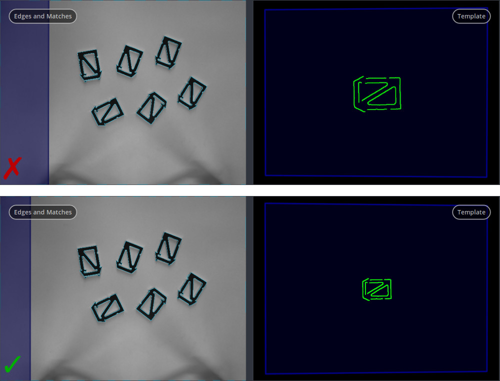

FAQs and troubleshooting¶
The base plane is not detected properly
AprilTag-based
- Is the angle between the rc_visard’s line of sight and the plane’s normal at most 10 degrees?
- Are at least three AprilTags of the “36h11” family visible in the left and right image?
- Can the tags be detected with the regular AprilTag component (see TagDetect)? If not, try with larger AprilTags.
- Do the tags span a large triangle? See AprilTag-based base-plane calibration.
Stereo-based
- Is the angle between the rc_visard’s line of sight and the plane’s normal at most 10 degrees?
- Does the plane appear in the depth image? If not, follow Configuring image parameters for ensuring a dense depth image.
- Is the base plane the most distant plane that appears in the depth image? If not, a ROI should be used to select the right plane, see Stereo-based base-plane calibration.
An object is not detected properly
Is the base-plane calibration (still) correct? The “Template” visualization on the Web GUI shows the size of the template that is being tried to match. Does it match the actual size of the objects on the left visualization?
Fig. 46 Top: The base-plane calibration is obviously wrong, since the size of the template (right) does not match the size of the objects on the left. Bottom: The size of the template matches the size of the objects.
Make sure that the projector is off or in ExposureAlternateActive mode during object detection.
Are all relevant edges detected in the image? See parameter Edge Sensitivity.
Try to increase the parameter Maximum Matching Distance.
Try to decrease the parameter Matching Percentile.
{kind=link}
A timeout occurs
The error message indicates if the timeout occurred during matching or refinement:
- The timeout occurred during matching:
- Are noise edges detected? If so, decrease the parameter Edge Sensitivity.
- Try to decrease the parameter Maximum Matching Distance.
- Try to increase the parameter Matching Percentile.
- Consider selecting a region of interest.
- Try with reduced quality.
- The timeout occurred during refinement:
- Decrease the parameter Maximum Object Number.
- Consider selecting a region of interest.
A lot of noise edges are detected:
- Try to decrease the parameter Edge Sensitivity.
- Is the base-plane texture-less?
- Make sure that the projector is off or in ExposureAlternateActive mode during object detection.